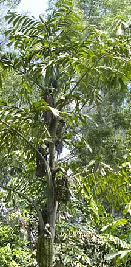
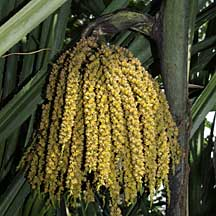
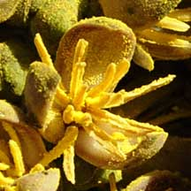
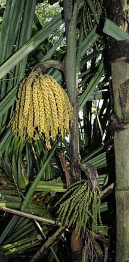
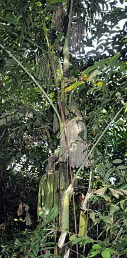
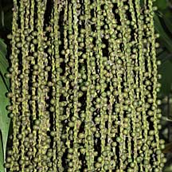
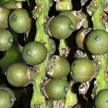
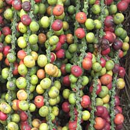
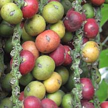
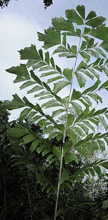

|
|
| plants text index | photo index |
| coastal plants |
| Fishtail
palm Caryota mitis Family Arecaceae updated Oct 2016 Where seen? Easily identified by the 'fishtails' of its leaves, this palm is considered by Whitmore to be 'the only palm commonly found in secondary forest'. In Singapore it is also commonly seen in the back mangroves. Features: A short palm (to about 6m), often forming clumps of several stems. Leaves long (2-6m) made up of leaflets in the shape of 'fishtails'. Flowers on hanging spikes. Fruits green ripening plum red or ochre. The palm starts flowering from upper growing tip and flowering bunches appear downwards. According to Whitmore, 'the tree slowly dying after fruiting'. Human uses: The fluff scraped off leaves and sheaths are used as tinder. Whitmore describes how in Kelantan, a 'gobek api' is used to start a fire. A piece of buffalo horn has a small hole drilled in it and a tight fitting piston of the same material. A little Fishtail palm fluff is dropped into the hole. 'The piston is driven sharply home, and if it is then removed quickly enough, the fluffy material will be found to be smouldering and can be fanned into a flame'. According to Burkill and Whitmore, the inflorescence is tapped for toddy and the pith of the trunk extracted for a kind of sago flour. The fruit wall and sap contains irritant needle-like crystals. |
 Sungei Cina, Apr 10 |
|
 Flowers  |
 Kranji Nature Trail, Dec 09 |
 Kranji Nature Trail, Dec 09 |
|
 Fruits  |
 Fruits  |
 Kranji Nature Trail, Dec 09 |
| Fishtail palm on Singapore shores |
| Photos of Fishtail palm for free download from wildsingapore flickr |
| Distribution in Singapore on this wildsingapore flickr map |
|
Links
References
|
|
|